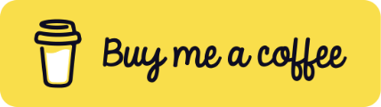

F5
F6
Früher
Auf älteren MacBooks lag die Tastaturbeleuchtung direkt auf F5 und F6 – ein Druck, fertig.
Menüleisten-App für macOS
Auf aktuellen MacBooks gibt es keine Tasten mehr für die Tastaturbeleuchtung – sie steckt im Kontrollzentrum. KeyboardBacklight legt sie zurück auf F5 und F6: F5 dunkler, F6 heller. Wie früher.
Ausprobieren
Klicke auf F5 oder F6, halte die Taste gedrückt oder nimm ← und →. Mit ⌥⇧ geht es in feinen Schritten. Das Einstellungsfenster funktioniert auch.
Klicke auf F5 oder F6.
Warum?
Auf älteren MacBooks lag die Tastaturbeleuchtung direkt auf F5 und F6 – ein Druck, fertig.
Dort sitzen jetzt Diktat und „Nicht stören“. Die Helligkeit der Tastatur gibt es nur noch per Klick im Kontrollzentrum.
Wieder auf F5 und F6: links dunkler, rechts heller, wie früher. Diktat und „Nicht stören“ fängt die App dafür ab. Wer mag, belegt die Tasten frei.
Funktionen
Jeder Druck ändert die Helligkeit um eine von 16 Stufen, wie früher. Mit gedrückter ⌥⇧ geht es in Viertelschritten. Gedrückt halten wiederholt in angenehmem Tempo.
Symbol und 16 Segmente, unten mittig auf dem Bildschirm, auf dem gerade die Maus ist. Wer sie nicht braucht, schaltet sie ab.
Ein Balken mit fünf Punkten im Halbkreis. Die Punkte leuchten mit der Helligkeit auf – ein Blick nach oben genügt.
Auf „Ändern“ klicken, Taste drücken, fertig. „Standard“ stellt F5 und F6 wieder her. Klappt mit und ohne „F1, F2 usw. als Standard-Funktionstasten“.
Belegte Tasten werden abgefangen, bevor macOS sie sieht – Diktat und „Nicht stören“ bleiben ruhig. Alle anderen Tasten gehen unverändert durch.
Menüleisten-Icon ausblenden, die Tasten funktionieren weiter. Die App erneut öffnen – über Finder oder Spotlight – holt Icon und Einstellungen zurück.
Autostart beim Anmelden mit einem Haken. Dann läuft die App still im Hintergrund – ohne Dock-Icon und ohne dass sich ein Fenster öffnet.
Bei hellem Licht hält die macOS-Automatik die Beleuchtung aus. Der erste Tastendruck schaltet sie deshalb ab – auf Wunsch kehrt sie nach einer wählbaren Zeit von selbst zurück, von 5 Minuten bis 8 Stunden.
Unter 1.000 Zeilen Swift, keine Abhängigkeiten, keine Netzwerkzugriffe. Der Quellcode liegt offen auf GitHub.
Download
Eine ZIP-Datei mit der fertigen App. Kein Installationsprogramm, kein Konto.
Neueste Version · macOS 14 oder neuer · Apple-Chip und Intel · in fünf Sprachen
Die ZIP-Datei per Doppelklick öffnen und KeyboardBacklight in den Ordner „Programme“ ziehen.
Die App ist nicht bei Apple notarisiert, deshalb blockiert macOS den ersten Start. Die Meldung schließen und die App hier freigeben:
Systemeinstellungen › Datenschutz & Sicherheit › Dennoch öffnen
Das ist nur beim ersten Start nötig.
Danach fragt macOS nach dem Bedienungshilfen-Zugriff – ohne ihn lassen sich die Tasten nicht abfangen. Einschalten unter:
Systemeinstellungen › Datenschutz & Sicherheit › Bedienungshilfen › KeyboardBacklight
Die App bemerkt die Freigabe von selbst, ein Neustart ist nicht nötig.
Gefällt dir KeyboardBacklight? Die App ist kostenlos – über einen Kaffee freue ich mich trotzdem.

Fragen
Nur so kann sie F5 und F6 abfangen, bevor macOS das Diktat startet oder „Nicht stören“ umschaltet. Abgefangen werden ausschließlich die belegten Tasten, alle anderen gehen unverändert weiter. Die App hat keinerlei Netzwerkzugriff und speichert keine Eingaben.
KeyboardBacklight ist nicht bei Apple notarisiert, dafür wäre ein kostenpflichtiges Entwicklerkonto nötig. macOS startet die App deshalb erst, wenn du sie unter Systemeinstellungen › Datenschutz & Sicherheit mit „Dennoch öffnen“ freigibst. Der Quellcode ist offen auf GitHub, und jede Version wird dort automatisch daraus gebaut.
Die neue ZIP-Datei laden und die App im Ordner „Programme“ ersetzen. Der Bedienungshilfen-Zugriff bleibt dabei erhalten.
Leg Dunkler und Heller einfach auf andere Tasten – dann gehen F5 und F6 wieder an macOS. Oder du beendest die App kurz über „Beenden“.
Öffne die App einfach noch einmal – über den Finder, Spotlight oder das Launchpad. Dann erscheinen Icon und Einstellungen. Ein Klick daneben schließt die Einstellungen, und das Icon verschwindet wieder.
Das ist die Helligkeitsautomatik von macOS. KeyboardBacklight schaltet sie beim ersten Tastendruck ab. Falls du sie über „An Umgebungslicht anpassen“ wieder eingeschaltet hast – oder „Wieder einschalten nach“ hat das nach der gewählten Zeit getan –, übernimmt sie erneut.
Nein. Die Tasten schicken je nach Einstellung unterschiedliche Signale – die Standardbelegung deckt beide Varianten ab.
Vorausgesetzt ist macOS 14 oder neuer und eine Tastatur mit Beleuchtung. Die App ist für Apple-Chip und Intel gebaut, getestet ist sie auf einem MacBook Air M3 mit macOS 26. Findet sie keine Tastaturbeleuchtung, zeigt das Einstellungsfenster einen Hinweis.